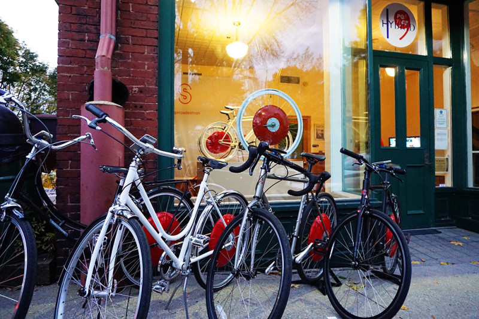

Bicycles are a preferred mode of transportation in urban areas.
Courtesy of SuperpedestrianThe Incredible Device That's Revolutionizing How We Get to Work
Widespread usage of the Copenhagen Wheel will unclog city streets and reduce greenhouse gas emissions.
Embedded within a sleek red disk that resembles a miniature flying saucer, it consists of three computers, 12 sensors, a 350-watt motor and a 48-volt lithium battery and can be attached to the back wheel of any bike with rear brakes. And if the device’s creators are right, this 26-inch wheel could change the future of urban transportation.
The Copenhagen Wheel, as the hack is known, transforms your ordinary two-wheeler into a electric-powered bike that can travel faster (up to 20 miles per hour) and farther (up to 31 miles per charge) than casual pedal-pushing will move you. Assaf Biderman, the wheel’s lead designer, says the add-ons will make bicycle transportation a more attractive option for commuters, unclogging streets, saving gasoline and cutting emissions in the process.
Biderman starts with a disclaimer: “I’m not a bike geek who wanted to put a motor on a bicycle.” His background is in physics, and as an associate director of Massachusetts Institute of Technology’s SENSEable City Lab, which focuses on how digital technology, sensors and handheld devices can transform urban areas, his vision is about changing the way cities function. Along with a team of a dozen MIT undergrads, he found that bikes were a preferred form of urban transit — as long as the trip was under nine miles long. (That distance varies by city: San Francisco, for instance, may deter bikers because of the hilly terrain.) To lengthen that distance, Biderman built the first prototypes of the Copenhagen Wheel, timed with the 2009 United Nations Summit on Climate Change hosted by Denmark — a predecessor to this year’s more successful summit in Paris.
In the years since then, Biderman’s inbox piled up with messages. In late 2012, he discovered that 14,000 emails were sent to the MIT lab from people who wanted to buy a Copenhagen Wheel. Shortly after, Biderman founded Superpedestrian, a robotics company in Cambridge, Mass., that is ramping up production capabilities for the Wheel.
The Copenhagen Wheel
An electric bike, perhaps surprisingly, is a very old idea. Around 1868, a Boston inventor named Sylvester Roper attached a coal-fired steam engine to a frame, a vehicle that could “out speed any horse in the world.” (In 1896, after swiftly pedaling through Charles River Park, Roper died of an apparent heart attack.)
Why did Roper’s bike never take off? When his invention debuted, just after the close of the Civil War, cities were still compact places, essentially big villages that obviated the need for long-distance travel. Around the same time that Roper’s bike coughed into motion, cities started growing skyward and spilled outward into suburbs. At that point, the electric bike may have been useful to those within the city, but the emergence of subways in 1904 and Ford’s Model T in 1908 both usurped the limelight. Cities, for the next century, built their infrastructure to accommodate the car.
Today, rural and suburban areas are declining. The world’s population is once again becoming concentrated in urban pockets. “Cities have been a focal point for centuries, but they are becoming even more so with urbanization of the developing world,” Biderman says. “We are building cities at the fastest rate in history.” That means more and more residents needing to travel daily from a metro area’s outer ring to the city center. Just ask any motorist in Los Angeles or Washington, D.C., if they could imagine dealing with ever-increasing traffic, and you can see why Superpedestrian is readying for tens of thousands of orders.
“You don’t need to be a scientist to realize this is unmanageable,” Biderman says. But he predicts that once people start buying the Copenhagen Wheel, infrastructure for bikes will follow, in the same way that highways were paved once every family had a vehicle.
Biderman adds that the difference in today’s cities, compared to a century ago, is not simply a matter of how congested the streets are. The success of Superpedestrian is also reliant on our technological connectedness. “The relationship between people and the place they live is mediated by machines: creating feedback loops, measuring how things change in real time, and analyzing the data,” he says. The Copenhagen Wheel’s computer system quickly learns how a biker rides, then imitates her pedaling — an experience Biderman has described as “seamless.” “People report that it feels so natural, and they feel so strong,” he says. “The best way to describe it is feeling like Popeye. You pop the spinach, and you’re Superman.”
Today, people live farther away from where they work than ever before. “The car enabled us to do that, but people want to switch out. They want an alternative,” Biderman says. Cities won’t be shrinking, but with Superpedestrian, bikes can take us farther.
MORE: Tomorrow’s Energy-Saving Neighborhood Is Being Built Today in Texas
Correction, 1/11/2016: A previous version of this article said that the Copenhagen Wheel can be attached to the back wheel of any bike; in fact, the device works only on bikes with rear brakes.
Let’s fix this country together.